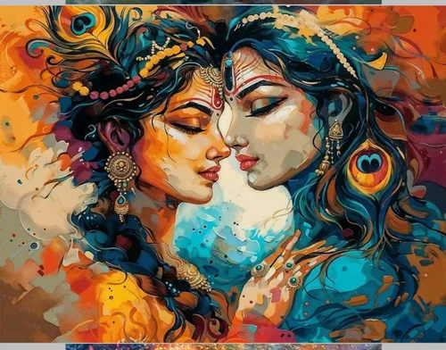

Radha and Krishna are among the most beloved figures in Hindu tradition.
They symbolize eternal love, devotion, and spiritual harmony.
Krishna is worshipped as an incarnation of Lord Vishnu.
Radha is regarded as Krishna's most devoted companion and devotee.
Their divine love represents the connection between the soul and God.
Many of their stories take place in the sacred town of Vrindavan.
Their lives inspire people to practice faith, kindness, and compassion.
Radha and Krishna are celebrated through festivals, music, and dance.
Temples dedicated to them attract millions of devotees every year.
Their message of pure love and devotion continues to inspire people worldwide.